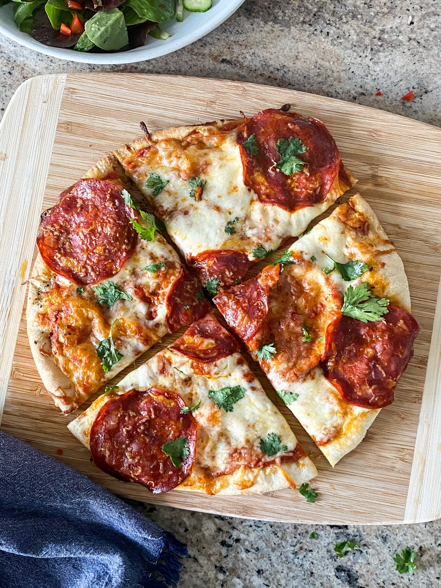

Pizza

Description
Quick, Easy and Delicious-Homemade pizza crust and tomato sauce has never been easier-and this recipe for pepperoni pizza produces a delicious classic
Ingredients
- Olive oil
- Salt and dried herbs (Italian blend, oregano, basil, parsley, etc.)
- Pizza sauce
- Cheese
- Toppings (optional)
- fresh parmesan cheese
- Fresh basil leaves
Steps
- Preheat the oven and brush olive oil around the edges of the pizza dough, about 1” wide.
- Add dried herbs to the top of the frozen pizza dough.
- Add pizza sauce on top of the dried herbs and then add a layer of mozzarella cheese. Add toppings. Top with a sprinkle of parmesan cheese.
- Bake pizza for about 10-15 minutes.